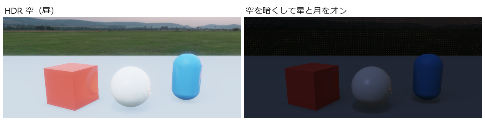

空
シーンの背景に空の画像を表示するコンポーネントです。画像の上に雲・星・月を重ねたり、朝から夜へ空の画像を移り変わらせたりできます。コンポーネントを追加の一覧では「空」という名前です。
こんなときに使う
- シーンの背景に空を表示したいとき
- 空に雲、星、月を重ねたいとき
- 昼から夕方、夜へと、空を移り変わらせたいとき
基本情報
| 項目 | 内容 |
|---|---|
| コンポーネントを追加での場所 | Rendering > 空 |
| 必須・推奨 | なし |
| 使う画像 | キューブマップ、または HDR のパノラマ画像 |
| 効く範囲 | 画面の背景全体。GameObject の位置は関係ありません |
プロパティ
| 表示名 | 内部名 | 種類 | 既定値 | 範囲 | 説明 |
|---|---|---|---|---|---|
| 空マップ | cubemap | アセット（画像） | （空） | 空に使う画像。時間帯キーフレームに画像があるときは使われません | |
| 時間帯キーフレーム | keyframes | 画像の一覧 | （空） | 時間帯によって切り替える空の画像を、朝から夜などの順に並べます（下を見てください） | |
| 優先度 | priority | 整数 | 0 | -100〜100 | 空が複数あるときに、どれを使うかを決めます |
| 空を表示 | sky_enabled | オン・オフ | オン | オフにすると、この空は使われません | |
| 空の回転 (度) | rotation_degrees | 小数 | 0 | 空を縦の軸のまわりに回します。太陽や山の向きを合わせるときに使います | |
| 空の強さ | intensity | 小数 | 1 | 0〜16 | 空の明るさの倍率 |
| トゥーンへの環境光 | toon_environment | 小数 | 0 | 0〜4 | トゥーンの影になった側に、空の色をどれだけ乗せるか。0 なら乗せません |
| 時間帯 | time | 小数 | 0 | 0〜1 | 時間帯キーフレームのどこを表示するか |
| 時間の進行速度 | time_speed | 小数 | 0 | -10〜10 | ゲームの実行中に、1 秒ごとに 時間帯 を進める量。1 を超えたら 0 に戻ります。マイナスなら逆に進みます |
| 雲を表示 | clouds_enabled | オン・オフ | オフ | 2 層の雲を重ねます | |
| 雲1の速度 | cloud_layer1_speed | 2 つの小数 | 0.003, 0 | -1〜1 | 1 層目の雲が流れる速さと向き |
| 雲1の細かさ | cloud_layer1_scale | 小数 | 3.5 | 0.1〜32 | 大きいほど雲の模様が細かくなります |
| 雲1の濃さ | cloud_layer1_density | 小数 | 0.45 | 0〜1 | 雲の量 |
| 雲1の色 | cloud_layer1_color | 色 | 白（不透明度 0.75） | 1 層目の雲の色。不透明度で雲の透け具合が変わります | |
| 雲2の速度 | cloud_layer2_speed | 2 つの小数 | -0.0015, 0.001 | -1〜1 | 2 層目の雲が流れる速さと向き |
| 雲2の細かさ | cloud_layer2_scale | 小数 | 7 | 0.1〜32 | 2 層目の模様の細かさ |
| 雲2の濃さ | cloud_layer2_density | 小数 | 0.28 | 0〜1 | 2 層目の雲の量 |
| 雲2の色 | cloud_layer2_color | 色 | 薄い青（不透明度 0.55） | 2 層目の雲の色 | |
| 星を表示 | stars_enabled | オン・オフ | オフ | 星を重ねます | |
| 星の密度 | star_density | 小数 | 0.35 | 0〜1 | 星の多さ |
| 星の強さ | star_intensity | 小数 | 2 | 0〜32 | 星の明るさ |
| 星の色 | star_color | 色 | 薄い橙 | 星の色 | |
| 月を表示 | moon_enabled | オン・オフ | オフ | 月を重ねます | |
| 月の方向 | moon_direction | 3 つの小数 | 0.35, 0.25, 0.9 | -1〜1 | 月が見える方向。長さは関係なく、向きだけが使われます。すべて 0 のときは 0, 0, 1 の方向になります |
| 月の大きさ | moon_size | 小数 | 0.04 | 0.001〜0.5 | 月の見かけの大きさ |
| 月の強さ | moon_intensity | 小数 | 5 | 0〜32 | 月の明るさ |
| 月の色 | moon_color | 色 | 薄い黄 | 月の色 |
どの空が使われるか
- 使われるのは 1 つだけです。
- 対象になるのは、GameObject とコンポーネントが有効で、空を表示 がオンで、空マップ か 時間帯キーフレーム に読める画像が入っている空です。
- その中で 優先度 がいちばん大きいものが使われます。優先度が同じなら、シーンの中で先にあるものが使われます。
画像が無いと雲・星・月も出ません空マップと時間帯キーフレームの両方が空だと、その空は使われないため、雲・星・月だけを表示することもできません。
時間帯キーフレーム
時間帯キーフレームに画像を並べると、時間帯 の値に合わせて画像が移り変わります。
- 画像は 0〜1 の間に等間隔に置かれます。3 枚なら、時間帯 0 で 1 枚目、0.5 で 2 枚目、1 で 3 枚目です。
- 間の値では、となりの 2 枚を混ぜて表示します（時間帯 0.25 なら 1 枚目と 2 枚目を半分ずつ）。
- 読めない画像は飛ばされます。
ゲームの実行中の動き
- 時間の進行速度 が 0 でなければ、時間帯 が進みます。たとえば 0.01 なら 100 秒で一周します。
- 雲は、実行を始めてからの時間に合わせて流れます。
見た目の違い

使い方
空を表示する
- 空の画像をプロジェクトに取り込みます。
- 空の GameObject を作り、コンポーネントを追加 > Rendering > 空 を付けます。
- 空マップ に画像を指定します。
- 太陽の向きなどが合わないときは 空の回転 (度) で回します。
昼から夜へ移り変わらせる
- 時間帯キーフレーム に、昼、夕方、夜の順で画像を入れます。
- 時間の進行速度 を 0.005 などの小さい値にします。
- 星を表示 と 月を表示 をオンにし、Motion などで夜の時間帯だけ星や月の強さを上げると、夜らしくなります。